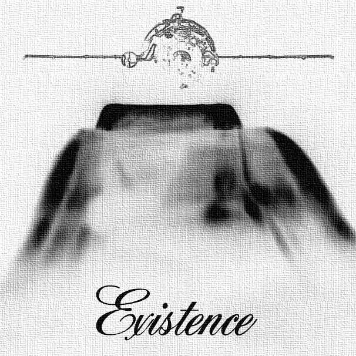

Existence

- 01. Late April
- 02. Jerry
- 03. Nifflasic Shower in Another World
- 04. Introspective Stranger
- 05. Politics
- 06. For Food and Communication
- 07. Incomprehensible Form
- 08. Late May
Every night (or morning or afternoon or evening) before I sleep, after I dig my head under a pillow, I drift off into another world. It's a stark white. With no walls, no ceiling, only a bare floor that stretches to infinity. There's no sun, no moon, no clouds, no wind, no rain. It isn't barren, however.
There's a house here, on a little grassy hill. It's quite small, but large enough for one person to dwell in comfortably. A dirt path leads from the front of this house to some unforseen locale, winding past several pine trees.
I live here. See that house on the shallow hill? Yup, that one. That's mine. Built it myself; took a couple years, yeah, but I still got it done. Actually, I'm the one that built the hill, too. And I planted the trees; that was a toughie, but I had an extra dose of resourcefulness in my pocket. Oh, and I also laid every inch of grass myself.
Well, it used to just be a large white room, as it were, I felt like making it my own, seeing as I come here everyday, staying from anywhere between a few minutes and (more likely) several hours, leaving with a sharp fade as I sink into a deep sleep.
Well, I'll tell you, I love that place. I want to expand the grassy field, plant some lavender flowers, strawberries, and a caapi vine or two. And maybe smuggle in an ocean, with token blue whale. But keep the people out. Because that's one of the reasons I love it there, and one of the reasons I give you Existence. It's quiet, unconfined, and unburdened by the Human Overwatch. My own geekoric sanctuary where I don't need to deal with people and cater to their whims or clubby opinions and I sure as great Hades don't need to do anything other than lie in the grass and stare at the trees all day long.
It's nothing personal, I just prefer my humans rare.
Well, anyway, not only can't I seem to be able to get my microphone working in Awesomenessland, but life is a curious thing. I guess this won't turn out to be my most inspirational or lucid piece (and please do forgive me, I do have a varied plethora of things on my mind), but it's a fact I've been aware of for longer than the time it took me to make Existence. It's an effect, perhaps, of my introverted nature that I contain an apparently narcissistic trait. It's not an offshoot of vanity, I'll just say, and not classical narcissism (although every person is narcissistic to some degree), but the simple act of being more preoccupied with my own thoughts and tending to ignore others as a result. (Hm, does that mean misanthropes are reclusive because they're misanthropes or misanthropes because of their introverted and reclusive nature?) It's a surprise, then, when it suddenly dawns on me how detailed life is.
Yeah, yeah, but think about it. Sure, I've never looked at ferns, the weather, or my desk the same way since I stumbled upon James Gleick, but that's not even what I mean. As always, I have my own work to thank for throwing it hard enough at my gawking face for me to take notice.
There's a whole world out there. Mine is empty, but this one is unfathomably populous. There are so many different variations of unicellular organisms; fungi; cnidarians; molluscs and other lophotrochozoans; insects and arthropods; echinoderms; tunicates; marsupials; monotremes; amphibians; reptiles; birds; rodents; afrotherians; chiropterans; even- and odd-toed ungulates; caniforms and feliforms; primates and apes (these are only those my meagre knowledge can remember, by the way, so there are many more) that to attempt to list them all is impossible. Seriously. I tried, but not only does the fact that we still haven't discovered every species on Earth make it tricky, but we still haven't even managed to name and properly categorise all those we have discovered (I forget the exact details, but I remember this story of a mouse-like creature discovered about a century ago that managed to go extinct while the scientists were thinking of what to name it. Apparently, the animal's discoverer regretted taking his cat), so difficult and time-consuming is the process.
This is the scope of life on Earth (let's disregard life elsewhere). Maybe it's smaller than the infinite expanse of my white world, but it's so much more rich, detailed, dense, and unpredictable. And this is perhaps the greatest reason for the above collection of songs. It does fail to encompass everything 'round these parts, obviously, but it's the effect of, yeah, looking out a window like all recluses do, and feeling like you're seeing Earth for the first time. And experiencing it as an observer (because that's what I do, observe). Watching the cars go by, listening to a person talk or the birds at five in the morning, or an accordion (seriously! When I see a sidewalk performer nowadays, I have to stop and listen. Those things kick ass), and experiencing the sputtering power of a garbage truck.
Existence is, then, to me, the soundtrack to Earth's mind-bending complexity.
Production notes and credits
Track 1 (Late April): Recorded around 7 p.m.
Track 2 (Jerry): Plane recorded near Cabo de São Vicente by Dobroide; https://freesound.org/people/dobroide/sounds/70950; CC BY 4.0. Jerry was interviewed by Charlie Bennett in either San Francisco or Denver (there's some confusion here, but I think it's San Francisco), on 5 January, 2007; https://freesound.org/people/kerouacsamerica/sounds/28390/; CC BY 3.0.
Track 3 (Nifflasic Shower in Another World): A reference to the mood and atmosphere of Nicklas 'Nifflas' Nygren's games (specifically Within a Deep Forest and the Knytt series, as well as that of the 1991 game, Another World.
Track 4 (Introspective Stranger): No notes.
Track 5 (Politics): Recorded with a Digital Wave Player, during then-PM Gordon Brown's PMQs.
Track 6 (For Food and Communication): Australian bat in South Australia was recorded by Digifishmusic; https://freesound.org/people/digifishmusic/sounds/41851/; CC BY 4.0. Worldwide HF radio beacons were recorded by Acclivity in 21 November 1999 at 18:10 GMT in Sussex, England; https://freesound.org/people/acclivity/sounds/13734/; CC BY-NC 4.0. Whale cry was recorded by mkoenig (used under fair use rationale as original file seems to no longer be available).
Track 7 (Incomprehensible Form): Herb Morrison's reaction to the Hindenburg disaster was extracted from a video on the Internet Archives about said disaster, produced by C. E. Price; https://archive.org/details/SF145; public domain. The police helicopter was recorded by Dobroide; https://freesound.org/people/dobroide/sounds/30789/; https://creativecommons.org/licenses/by/4.0/. Garbage truck was also recorded by Dobroide; https://freesound.org/people/dobroide/sounds/6986/; https://creativecommons.org/licenses/by/4.0/. Mentally ill woman shouting was also recorded by Dobroide; https://freesound.org/people/dobroide/sounds/44708/; https://creativecommons.org/licenses/by/4.0/. San Franciscan street noise was recorded by LS; https://freesound.org/people/LS/sounds/8377/; http://creativecommons.org/licenses/by/3.0/. The street accordionist in São Paulo was recorded by Reinsamba; https://freesound.org/people/reinsamba/sounds/257732/; CC 0.
Track 8 (Late May): Recorded in the early morning.
Usage of this item elsewhere
- All of the files associated with this item can be downloaded from the Internet Archive.
- If you want to support the project, this item can also be purchased from Bandcamp. (In keeping with the CC BY-NC license in track 6, this one is free and should not be purchased.)
- Alternatively, it can be purchased through the musicians' cooperative jam.coop.
Supporters
- ghostwheel on Patreon
License & Attribution
By Joaquim Baeta. These sounds and the files associated with them are licensed under a Creative Commons Attribution-NonCommercial-ShareAlike 4.0 International license. You are free to distribute, remix, adapt, and build upon it in any medium or format, provided it is for noncommercial purposes, appropriate credit is given to Joaquim Baeta, you indicate if changes were made, and redistribute any derivative work under the same license.
Example attribution: "Existence" by Joaquim Baeta, https://scenoptica.com/sound/existence.html, CC BY-NC-SA.